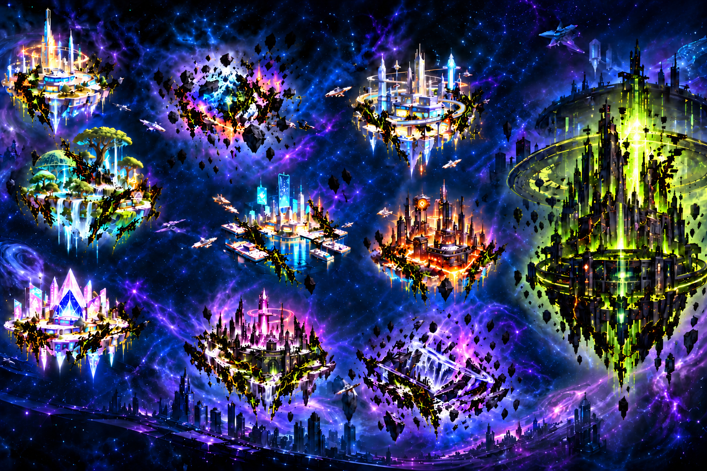
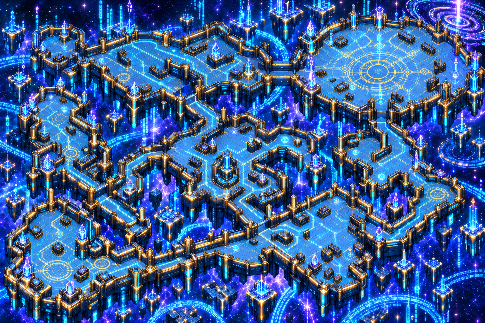
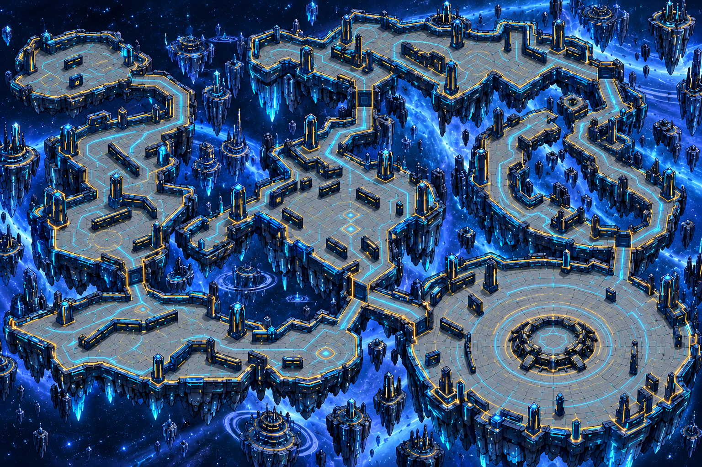
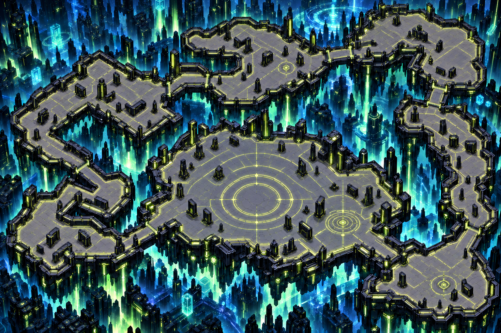
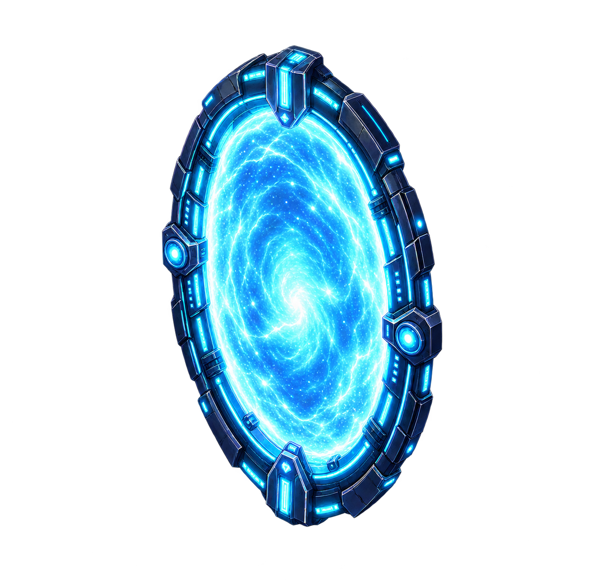
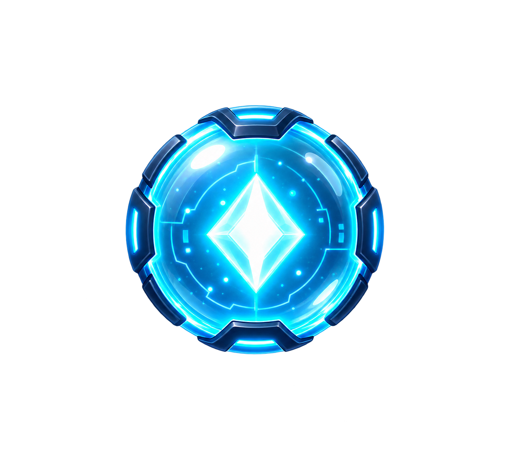
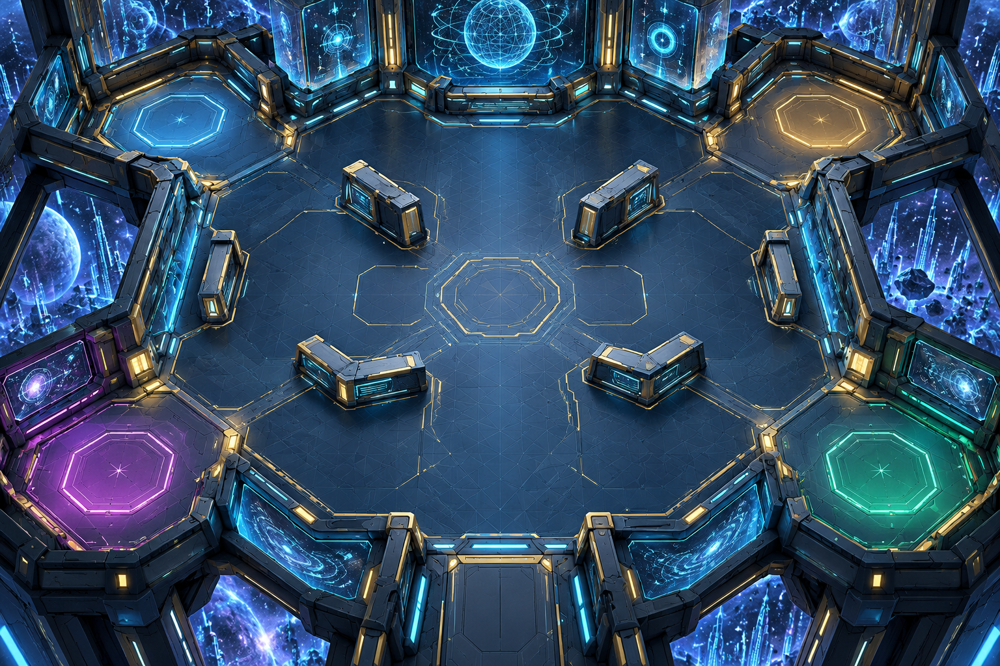
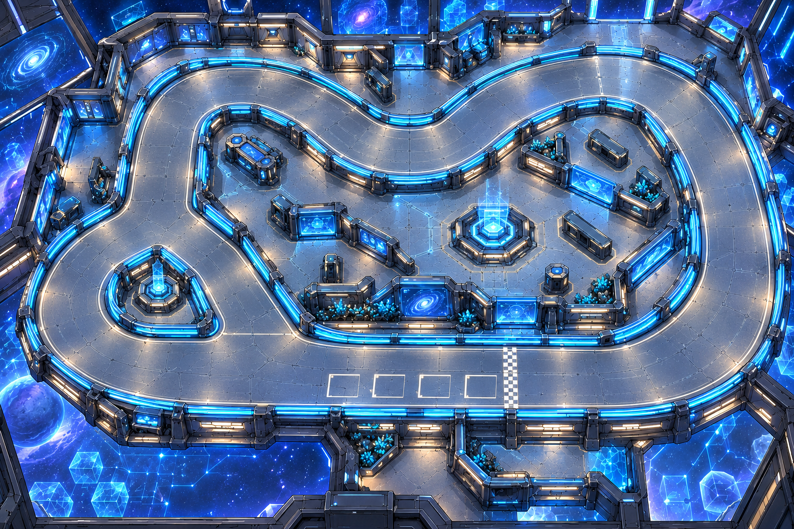
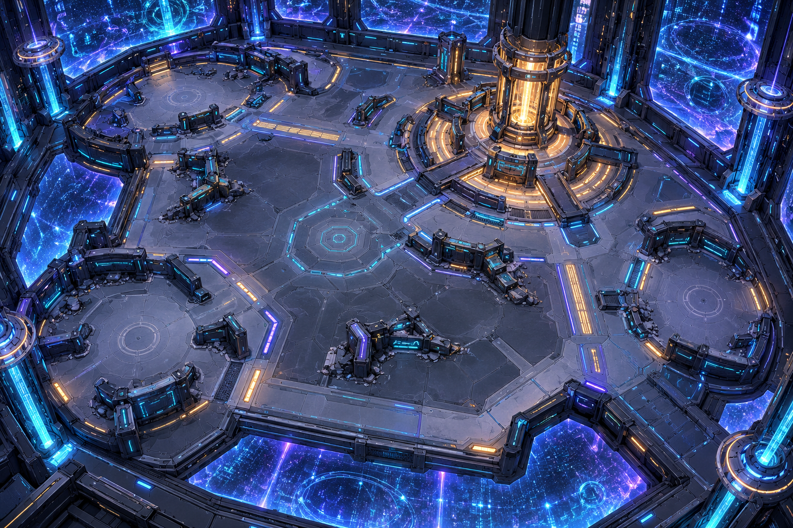

Four clean backgrounds and a transparent static portal sprite. Labels, enemies, gates, collision and campaign routes require separate game integration.
1536 × 1024 PNG

1536 × 1024 PNG

1536 × 1024 PNG

1536 × 1024 PNG

1265 × 1243 PNG

Transparent collectible sprite, with512/256/128/64/32 longest-edge exports. Gameplay effect awaits balance decisions.

Three original simulation settings for sparring, teamwork and escalating trials. These backgrounds await mode and collision implementation.
Solo drills, duels and team sparring

X-Rush / Evo Rush racing and time trials

Escalating survival waves, elite and boss trials
